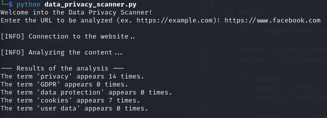
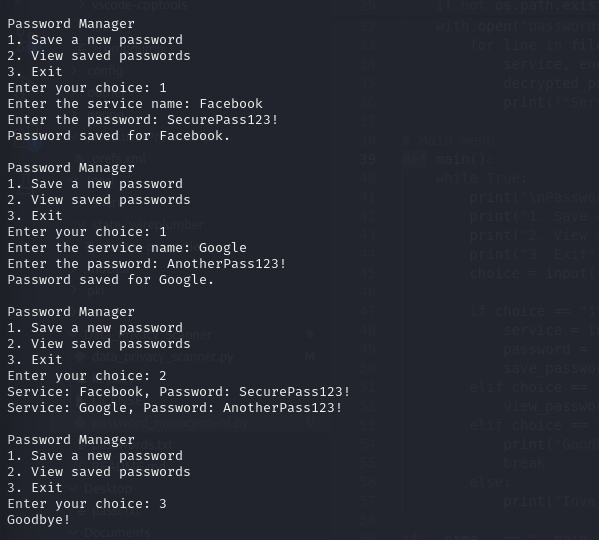
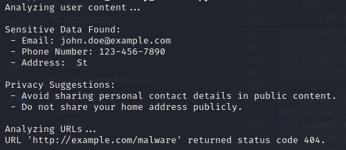

Data Privacy Scanner
The Data Privacy Scanner is a Python-based project designed to analyze websites for references to privacy policies or related terms. By performing web scraping, it scans and extracts content from webpages, helping users quickly identify whether a site addresses data protection or privacy standards. This project demonstrates my ability to work with web scraping tools, process textual data, and build functional scripts that promote awareness of online privacy—a crucial aspect in today's digital landscape.
Here is an example using Facebook website:
Password Manager
This Password Manager project is designed to help users securely store their passwords. Using the cryptography library, passwords are encrypted before being saved, ensuring that sensitive data is protected. The application allows users to add new passwords, view existing ones (after decrypting them), and manage an encryption key to safeguard the data. This tool is useful for anyone who wants a secure and easily accessible archive of their online credentials.
Here is an example:
Content Privacy Manager
The Content Privacy Monitor project aims to provide proactive protection against unintentional sharing of sensitive information on social media. Using advanced regular expression (regex) detection algorithms, the system analyzes the texts of posts and comments to identify emails, phone numbers, addresses and other private information. It also checks the security of shared links, checking if websites are potentially malicious via APIs like VirusTotal. Finally, it provides practical tips to users on how to improve their privacy, how to limit the visibility of content or remove sensitive data, thus helping to ensure safe and informed browsing.
Here is an example:
In this example, it was used a simulated post with sensitive information (email, phone number, address) and a URL that could be dangerous. The system analyzes content for privacy violations and provides suggestions to improve online security.This is the output:
